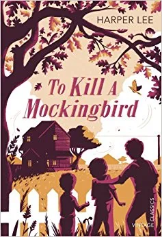

"Matar a un ruiseñor"
Ficha técnica
- Autor: Harper Lee
- Año: 1960
- Género: Novela dramática
Comentario
Una historia sobre la injusticia racial y la pérdida de la inocencia, narrada a través de los ojos de una niña.
Un libro imprescindible que sigue tan relevante hoy como cuando se publicó por primera vez.
